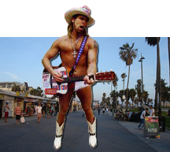

Another [crazy] man from Venice
Why, just recently, my son Zack and I were casually sharing a pitcher at the Baja Cantina. We were getting to talkin' and suddenly...
Well, I'll let him describe it -
"As me and my dad were sitting in the comfortable couch section of the Baja Cantina bar enjoying margaritas, we suddenly were both caught off guard by this loud, and totally wasted guy, who looked like a grown up version of a frat guy. Boisterous and just plain noncoherent, he bumbled up to us and asked us "How we knew each other!!!" I told him that "this is my dad" and he says "WHAT! I thought you were brothers!! Man, you have no wrinkles!!"
"At this point dad took over. "Yes," he responded... but was then immediately thrown off-course when all of a sudden the drunko asked him, "What are you drinking?" to which dad replied, "A margarita..." and that's when his wasted girlfriend came hurtling through the place, hurling the F bomb and being thrown out of the restaurant by security guards and this bumbling idiot splits after her. Just another night at the Baja!
"Little did we know the state of chaos currently happening outside, as our waitress later reported to us, that the drunken girl being thrown out of the Baja caused even more of a ruckus once outside. Hurling patio chairs (along with multiple curse words) this girl must have been on a bad trip!"
Like Zack said, just another night at the Baja! And just another night of crazy Venice men, although not all Venice men are inherently crazy. But some may just naturally be. Which got me thinking about true Venice men and who they are. Men that I've known that show a true Venice spirit. In a truly creative crazy way. So I made a list of those current crazy gents, in no obvious order: Harry Perry, Gerry Fialka, Jim Smith, Todd von Hoffmann, Steven Pouliot, Arnold Springer, Geoffrey Solomon, Scott Mayers, Bob Libow, Dr. Bob, Tom Schnabel, Tony Bill, and Jeff Stanton. Crazy Venetians, all. And probably many more...
Some of the deceased Venetian men I hold dear include Mark Kornfeld, Greg Parkos, Gil Borgos, Michael Murphy, Robert Graham, Dudley Moore, Marvin Rand, Greg Hines, Rick Sinatra, and, of course, Abbot Kinney.
Other crazies who I've known and have left Venice include: Tom Sewell, Oak O'Connor, Michael Bowe, Al Stone, John Urie, Larry Linkus, Ken Newfeld, David Earp, Britt Ehringer, Bill Wiener, Mayor Bob, Ricky Klein and Lance Diskin. All great men who held Venice in their hearts, and probably still do.
But there's another ex-Venice guy, who's now become world-famous by "doing his thing," in a typical wacky Venice way, that I want to present here. Robert Burck. What? You've never heard of him? Either?
I'll let his father, Kenny R. Burck, a semi-retired genealogy buff, weigh in on his son. "My last name, Burck, people sometimes think is the English Burke, with an 'e,' but it's not, it's German, and there should be an umlaut over the 'u,' but of course we don't use umlauts in America.
"Now here's a copy of the New York Post from last winter, and you see the headline, 'SNOW JOKE,' which refers to a big snowstorm they had in the city. Well, maybe you've seen this fellow the Post put on the cover - the Naked Cowboy. He's the fellow who stands in his underwear and cowboy hat and boots playing the guitar in the middle of Times Square. You've seen him? Of course you have. At one time or another, anybody who passes through Times Square sees the Naked Cowboy. Well, speaking of family, the Naked Cowboy is my son. That's right, people sometimes don't believe me, but the Naked Cowboy is Robert Burck, my son, born December 23, 1970. Recently, a New York tourism bureau announced that the Naked Cowboy is the third leading tourist attraction in New York City, after the Statue of Liberty and the Empire State Building. Not a lot of fathers can say that about their son, can they?
"My wife and I did not set out to raise a Naked Cowboy. Growing up in the small town of Greenhills, Ohio, Bobbie always wanted to be famous and he always wanted to have a lot of money. When he was in high school, he got interested in bodybuilding, and right away he decided he was going to be Mr. America. I remember driving him all over to bodybuilding competitions, buying him tanning creams, and so on. He worked so hard - he always works hard, the word 'can't' does not exist in the vocabulary of the Naked Cowboy - but eventually he decided there wasn't enough money in bodybuilding. Well, then he was going to be a model; then he was going to be a movie star. After high school, he went to the University of Cincinnati and got a degree in political science, and for a while there I thought he was going to join the State Department, but instead he kept on with the acting, traveling all over for auditions, sometimes living out of dumpsters, the way your struggling artists do. He got some small parts, a non-speaking part on 'Baywatch,' for example, but he's a perfectionist in everything he does and he wasn't satisfied with how the acting was coming along. So then he decided to become a Country-and-Western singing star. Well, in just a few weeks he'd gotten pretty good at the guitar, and he started writing his own songs. He adopted the Country-and-Western look - the cowboy hat and the boots, along with clothes, too, at that time.
"He was travelling around the country for a few years, playing mostly on the street - places like Key West, Florida, and Venice Beach, California - and one afternoon he was playing and singing on Venice Beach, also known as Muscle Beach, and he wasn't getting much of a crowd, and a photographer friend of his suggested he take off his clothes and sing, and since it was a hot day, what the heck, he did take off his clothes, and, sure enough, he drew a big crowd and made a lot of money. This photographer said, 'Hey, you're the Naked Cowboy,' and that's how it all started."

OK, that's how the Naked Cowboy started, according to his Dad. But a little research on Robert's website further expands on his story. In his words:
In 1996, I was out in California on a photoshoot for Playgirl Magazine, and went to Venice Beach. I saw Muscle Beach and decided I would be training there in the sun again, with my little brother Andy on our visit out in July, '97.
On July 12, 1997, my rapidly growing little brother Andy and I left for California. I had won a contest through a local radio station, WEBN 102.7 FM. What I won was a three-day vacation for two to Santa Monica, and a guest appearance on the hit television program "Baywatch." Really having no idea what to expect, we filled ourselves with anticipation for what we felt could be anything from cool to really cool. We spent the first three days in a deluxe hotel right up the street from the Santa Monica Pier. We walked the pier several times and jogged the beach. We walked down and checked out the people along the Boardwalk who were doing everything from begging, to swallowing swords and cutting initials out of apples in people's mouths with chainsaws. Crazy, neat shit! We worked out at "Muscle Beach" and had some terrific brotherly bonding. We
smoked a little bud and saw a lot of people. Lots of really hot girls and athletic types in roller blades were making tracks around us. I just loved this place!
After returning home, I took my hard earned experience from singing in the street, being hounded a bit, and what not, and flew back to Venice Beach on December 23, 1998. I had made arrangements with a friend, Charles Worthington, to stay at his place in Hollywood. He took me to and from the airport and gave me rides to Venice Beach each day. He was the photographer who shot me in Playgirl Magazine, on that previous California trip. I wanted to get to Venice Beach because I knew I could perform for an audience each day without being told to leave, and I knew that I could experiment and determine what I could do to make people pay attention and like me for God sakes. I performed on December 24, 1998 for over six hours in jeans, boots, hat, and loosely fitting flannel shirt with the sleeves cut off. I made one dollar and two cents. The dollar was thrown in by an elderly lady who clearly felt sorry for me, and the two cents was thrown at me. When Charles picked me up after that day, he realized that I was a beaten man and told me not to give up. He suggested that I try something different like "hell, Robert, play in your underwear," laughing, "that'll make em' stop."
The next morning I took the bus to the Boardwalk. Charles said he would be down to get me by five, which would give me a total of about eight hours. I first went to the "pit" to work out, you know, "Muscle Beach," then I went to perform. Charles had said when I left that he would bring his camera down and get some shots of me playing. Much to his surprise when he got there I had a guitar case full of dollar bills as I sang, danced and banged out tunes on the guitar in my cowboy boots, hat and underwear. He laughed and smiled like a satisfied old wise man and took a series of photos, as did hundreds of on-lookers. This had been going on for several hours. I got on the news and was a big hit. Charles was so pleased. I remember being driven back to his home, exhausted. He said, "Robert, you have passion, and that's all it takes to be a singer." He then laughed again and said, "my little naked cowboy". See, I knew I could sing.
More importantly, this trip to California began to create for me a more identified association between myself and the persona I'd only touched upon as of yet, the Naked Cowboy. While at Charles' place, in Hollywood, I went to the Boardwalk again, two days straight, before leaving. I performed as the Naked Cowboy both times and made considerable money, under the circumstances, and got hundreds of photos taken. I was recognized and approached by many that knew me from the one time I'd done this before. I made the decision then and there, I'd be the Naked Cowboy in "99!"
And that's Bob's story. I put the parts in bold to emphasize the reality of this crazy situation.
Well, I now knew I had to get in touch with Charles Worthington, to get to the genesis of the Naked Cowboy thing. I emailed him and a few minutes later he called me back. I asked him about his background - he manages actors - and during the late '80s until the '90s, was a photographer for Playgirl Magazine. He shot Robert for Playgirl in 1996, and his immediate impression of him was that he wanted most of all to be world famous. But he was only playing for tips on Venice beach in '98, and nothing was happening for him then. Charles would take him down to Venice, and he'd only make, like, $6 per day. This just wasn't hacking it for him.
However, Charles did remember back somewhere in '93 - '95, there was an old Caucasian couple that "posed" along the boardwalk by muscle beach. They did their body-building routine for tips. But what was so amazing about them was that they were in their late 70s to maybe early 90s; they were octogenarian old! The man was balding with just a fringe of white hair on his head; the lady was coiffed in white, steel grey, and blue hair in a '20s - '30s style. Both of their skin-color was a deep, deep-tanned brown, like a leather couch or old luggage. And the suits they wore were of bright colors, red or blue, but shockingly small. The lady's was no bigger that two postage stamps and an envelope flap. The guy's was of similar tiny-ness. But they were both charming, and confident with themselves. He said he'd never forget them.
And with them in mind, he told Robert, "If you want to make money, take my cowboy hat and play in your underwear." And the next day he made $60! "Now, you're the Naked Cowboy!" And what was so amazing about him was that he had the consistency and drive to make it all work.
Back to Robert's father: "Then in 1999 he came to New York and began playing in Times Square, and he was an immediate hit with the tourists, and now he's so rich he could retire - he made a thousand dollars a day in 2008 from licensing his image and appearing in commercials and so forth - but he's always moving on to new challenges. He says his new ambition is to become the best-known entertainer in the history of the world, and I have no doubt he will achieve his ambition."
So I called up my roving-reporter friend in New York City, John M. Van Aken, to have him check the Naked Cowboy out. He reported that up until this past September, Robert was actively engaged in running for mayor of NYC, but, as announced in the October 1st issue of Rolling Stone Magazine, he was forced to drop his mayoral bid. And on a recent December morning, John told me, "No singing Cowboy to be found. The city may have kicked him out since they modified Times Square, to make it more pedestrian and tourist-friendly. A security guy says he still comes but not every day."
Interestingly, "the Naked Cowboy is not at all interested in genealogy, though," states Robert's father Kenny. "In that, he is a typical child of a genealogist. But genealogists' kids generally don't care anything about it. When Bobbie was a boy, I sure did drag him around to a lot of libraries and cemeteries and so on in my own researches, and maybe that contributed to his mental illness so that he wanted to stand in his jockey shorts playing the guitar in front of strangers on the street.
"I'm kidding - the Naked Cowboy isn't mentally ill, he's as sane as you or me. He says he used to travel the country to meet a million people, but now millions come to New York City every year to meet him. People sometimes tell him they know him from somewhere or they're a friend of his dad. The way he'll know you're really a friend of mine is if you tell him you met me and then say the one word: 'genealogy.' That way the Naked Cowboy will know you are for real."
So I told John to say this to Robert, and John's response was -
"No sighting of Naked Cowboy in Times Square. I have been told that he hasn't been around for awhile. Maybe off doing a gig somewhere's...in warmer environs! That guitar won't keep him warm...nor those diapers he wears!"
I don't know, but if I were him, the Naked Cowboy wearing hardly anything, I'd certainly have escaped those Eastern winter climes and massive snow drifts, and headed back west, to some warming relief along these golden shores, back to past visions of stardom and fame, to the origins of where my celebrity initially began. To the Pit, to the boardwalk, to Venice Beach.
So, if you see Robert "N.C." Burck once-again busking locally in his tighty-whities, flashing his pecs, and singing a honky-tonk C&W song in only boots, cowboy hat and hardly anything else, just shrug it off to another crazy man from Venice, living out another uniquely Venetian dream. Maybe tip him, if you can.
--
1-7-10
Paul -
38 in Times Square today and the Naked Cowboy surfaced!
I showed him your "blog"-email from my cellphone. I have other pictures on good camera.
|